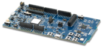
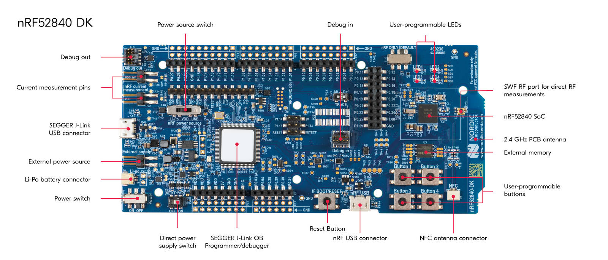
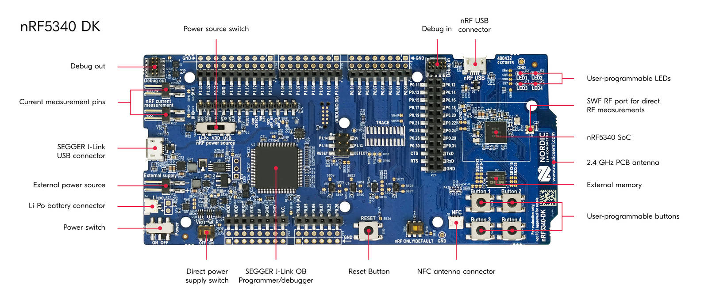
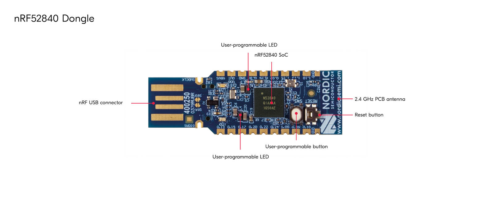

Matter nRF Connect All Clusters Example Application#
Note: This example is intended only to perform smoke tests of a Matter solution integrated with nRF Connect SDK platform. The example quality is not production ready and it may contain minor bugs or use not optimal configuration. It is not recommended to use this example as a basis for creating a market ready product.
For the production ready and optimized Matter samples, see nRF Connect SDK samples. The Matter samples in nRF Connect SDK use various additional software components and provide multiple optional features that improve the developer and user experience. To read more about it, see Matter support in nRF Connect SDK page. Using Matter samples from nRF Connect SDK allows you to get a full Nordic technical support via DevZone portal.
The nRF All Clusters Example Application implements various ZCL clusters populated on three endpoints. You can use this example as a reference for creating your own application.

The example is based on Matter and Nordic Semiconductor’s nRF Connect SDK, and was created to facilitate testing and certification of a Matter device communicating over a low-power, 802.15.4 Thread network.
The example behaves as a Matter accessory, that is a device that can be paired into an existing Matter network and can be controlled by this network. The device works as a Thread Minimal End Device.
Overview#
This example is running on the nRF Connect platform, which is based on Nordic Semiconductor’s nRF Connect SDK and Zephyr RTOS. Visit Matter’s nRF Connect platform overview to read more about the platform structure and dependencies.
By default, the Matter accessory device has IPv6 networking disabled. You must pair it with the Matter controller over Bluetooth® LE to get the configuration from the controller to use the device within a Thread or Wi-Fi network. You have to make the device discoverable manually (for security reasons). See Bluetooth LE advertising to learn how to do this. The controller must get the commissioning information from the Matter accessory device and provision the device into the network.
You can test this application remotely over the Thread or the Wi-Fi protocol, which in either case requires more devices, including a Matter controller that you can configure either on a PC or a mobile device.
Bluetooth LE advertising#
In this example, to commission the device onto a Matter network, it must be discoverable over Bluetooth LE. For security reasons, you must start Bluetooth LE advertising manually after powering up the device by pressing Button 4.
Bluetooth LE rendezvous#
In this example, the commissioning procedure is done over Bluetooth LE between a Matter device and the Matter controller, where the controller has the commissioner role.
To start the rendezvous, the controller must get the commissioning information from the Matter device. The data payload is encoded within a QR code, printed to the UART console.
Thread provisioning#
Last part of the rendezvous procedure, the provisioning operation involves sending the Thread network credentials from the Matter controller to the Matter device. As a result, device is able to join the Thread network and communicate with other Thread devices in the network.
Requirements#
The application requires a specific revision of the nRF Connect SDK to work correctly. See Setting up the environment for more information.
Supported devices#
The example supports building and running on the following devices:
Hardware platform |
Build target |
Platform image |
|---|---|---|
|
 |
|
|
 |
|
|
 |
Device UI#
This section lists the User Interface elements that you can use to control and monitor the state of the device. These correspond to PCB components on the platform image.
Note:
The following Device UI elements are missing on the nRF52840 Dongle: Button 2, Button 3, Button 4, SEGGER J-Link USB port, and NFC port with antenna attached. You can collect logs from the nRF52840 Dongle using the nRF USB port instead of the SEGGER J-Link USB port. Functionalities associated with the remaining missing elements are inaccessible.
LED 1 shows the overall state of the device and its connectivity. The following states are possible:
Short Flash On (50 ms on/950 ms off) — The device is in the unprovisioned (unpaired) state and is waiting for a commissioning application to connect.
Rapid Even Flashing (100 ms on/100 ms off) — The device is in the unprovisioned state and a commissioning application is connected through Bluetooth LE.
Short Flash Off (950ms on/50ms off) — The device is fully provisioned, but does not yet have full connectivity for Thread or Wi-Fi network, or the related services.
Solid On — The device is fully provisioned and has full Thread network and service connectivity.
Button 1 can be used for the following purposes:
Pressed for 6 s — Initiates the factory reset of the device. Releasing the button within the 6-second window cancels the factory reset procedure. LEDs 1-4 blink in unison when the factory reset procedure is initiated.
Button 4 — Pressing the button once starts Bluetooth LE advertising for the predefined period of time (15 minutes by default).
SEGGER J-Link USB port can be used to get logs from the device or communicate with it using the command line interface.
Setting up the environment#
Before building the example, check out the Matter repository and sync submodules using the following command:
$ git submodule update --init
The example requires a specific revision of the nRF Connect SDK. You can either install it along with the related tools directly on your system or use a Docker image that has the tools pre-installed.
If you are a macOS user, you won’t be able to use the Docker container to flash the application onto a Nordic development kit due to certain limitations of Docker for macOS. Use the native shell for building instead.
Using Docker container for setup#
To use the Docker container for setup, complete the following steps:
If you do not have the nRF Connect SDK installed yet, create a directory for it by running the following command:
$ mkdir ~/nrfconnect
Download the latest version of the nRF Connect SDK Docker image by running the following command:
$ docker pull nordicsemi/nrfconnect-chip
Start Docker with the downloaded image by running the following command, customized to your needs as described below:
$ docker run --rm -it -e RUNAS=$(id -u) -v ~/nrfconnect:/var/ncs -v ~/connectedhomeip:/var/chip \ -v /dev/bus/usb:/dev/bus/usb --device-cgroup-rule "c 189:* rmw" nordicsemi/nrfconnect-chipIn this command:
~/nrfconnect can be replaced with an absolute path to the nRF Connect SDK source directory.
~/connectedhomeip must be replaced with an absolute path to the CHIP source directory.
-v /dev/bus/usb:/dev/bus/usb –device-cgroup-rule “c 189: rmw”* parameters can be omitted if you are not planning to flash the example onto hardware. These parameters give the container access to USB devices connected to your computer such as the nRF52840 DK.
–rm can be omitted if you do not want the container to be auto-removed when you exit the container shell session.
-e RUNAS=$(id -u) is needed to start the container session as the current user instead of root.
Update the nRF Connect SDK to the most recent supported revision, by running the following command:
$ cd /var/chip $ python3 scripts/setup/nrfconnect/update_ncs.py --update
Now you can proceed with the Building instruction.
Using native shell for setup#
To use the native shell for setup, complete the following steps:
Download and install the following additional software:
If you do not have the nRF Connect SDK installed, follow the guide in the nRF Connect SDK documentation to install the latest stable nRF Connect SDK version. Since command-line tools will be used for building the example, installing SEGGER Embedded Studio is not required.
If you have the SDK already installed, continue to the next step and update the nRF Connect SDK after initializing environment variables.
Initialize environment variables referred to by the CHIP and the nRF Connect SDK build scripts. Use the nrfutil application to prepare your environment:
$ nrfutil sdk-manager toolchain launch --ncs-version v3.3.0 --shell
Update the nRF Connect SDK to the most recent supported revision by running the following command (replace matter-dir with the path to Matter repository directory):
$ cd matter-dir $ python3 scripts/setup/nrfconnect/update_ncs.py --update
Now you can proceed with the Building instruction.
Building#
Complete the following steps, regardless of the method used for setting up the environment:
Navigate to the example’s directory:
$ cd examples/all-clusters-minimal-app/nrfconnect
Run the following command to build the example, with build-target replaced with the build target name of the Nordic Semiconductor’s kit you own, for example
nrf52840dk/nrf52840:$ west build -b build-target --sysbuild
You only need to specify the build target on the first build. See Requirements for the build target names of compatible kits.
The output zephyr.hex file will be available in the build/nrfconnect/zephyr/
directory.
Removing build artifacts#
If you’re planning to build the example for a different kit or make changes to the configuration, remove all build artifacts before building. To do so, use the following command:
$ rm -r build
Building with release configuration#
To build the example with release configuration that disables the diagnostic features like logs and command-line interface, run the following command:
$ west build -b build-target --sysbuild -- -DFILE_SUFFIX=release
Remember to replace build-target with the build target name of the Nordic Semiconductor’s kit you own.
Building with Device Firmware Upgrade support#
Support for DFU using Matter OTA is disabled by default.
To build the example with configuration that supports DFU, run the following
command with build-target replaced with the build target name of the Nordic
Semiconductor kit you are using (for example nrf52840dk/nrf52840):
$ west build -b build-target --sysbuild -- -DFILE_SUFFIX=dfu
Note:
There are two types of Device Firmware Upgrade modes: single-image DFU and multi-image DFU. Single-image mode supports upgrading only one firmware image, the application image, and should be used for single-core nRF52840 DK devices. Multi-image mode allows to upgrade more firmware images and is suitable for upgrading the application core and network core firmware in two-core nRF5340 DK devices.
Currently the multi-image mode is not available for the Matter OTA DFU.
Changing bootloader configuration#
To change the default MCUboot configuration, edit the prj.conf file located in
the sysbuild/mcuboot directory.
Changing flash memory settings#
In the default configuration, the MCUboot uses the Partition Manager to configure flash partitions used for the bootloader application image slot purposes. You can change these settings by defining static partitions. This example uses this option to define using an external flash.
To modify the flash settings of your board (that is, your build-target, for
example nrf52840dk/nrf52840), edit the pm_static_<build_target>.yml file
(for example pm_static_nrf52840dk_nrf52840.yml), located in the main
application directory.
Configuring the example#
The Zephyr ecosystem is based on Kconfig files and the settings can be modified using the menuconfig utility.
To open the menuconfig utility, run the following command from the example directory:
$ west build -b build-target --sysbuild -t menuconfig
Remember to replace build-target with the build target name of the Nordic Semiconductor’s kit you own.
Changes done with menuconfig will be lost if the build directory is deleted.
To make them persistent, save the configuration options in the prj.conf file.
Example build types#
The example uses different configuration files depending on the supported features. Configuration files are provided for different build types and they are located in the application root directory.
The prj.conf file represents a debug build type. Other build types are covered
by dedicated files with the build type added as a suffix to the prj part, as per
the following list. For example, the release build type file name is
prj_release.conf. If a board has other configuration files, for example
associated with partition layout or child image configuration, these follow the
same pattern.
Before you start testing the application, you can select one of the build types supported by the sample. This sample supports the following build types, depending on the selected board:
debug – Debug version of the application - can be used to enable additional features for verifying the application behavior, such as logs or command-line shell.
release – Release version of the application - can be used to enable only the necessary application functionalities to optimize its performance. It has Device Firmware Upgrade feature enabled. It can be used only for the nRF52840 DK and nRF5340 DK, as only those platforms support the DFU.
dfu – Debug version of the application with Device Firmware Upgrade feature support. It can be used only for the nRF52840 DK and nRF5340 DK, as only those platforms support the DFU.
For more information, see the Configuring nRF Connect SDK examples page.
Flashing and debugging#
The flashing and debugging procedure is different for the development kits and the nRF52840 Dongle.
Flashing on the development kits#
To flash the application to the device, use the west tool and run the following command from the example directory:
$ west flash --erase
If you have multiple development kits connected, west will prompt you to pick the correct one.
To debug the application on target, run the following command from the example directory:
$ west debug
Flashing on the nRF52840 Dongle#
Visit Programming and Debugging nRF52840 Dongle to read more about flashing on the nRF52840 Dongle.
Testing the example#
Check the CLI tutorial to learn how to use command-line interface of the application.
Testing using Linux CHIPTool#
Read the CHIP Tool user guide to see how to use CHIP Tool for Linux or mac OS to commission and control the application within a Matter-enabled Thread network.
Testing using Android CHIPTool#
Read the Android commissioning guide to see how to use CHIPTool for Android smartphones to commission and control the application within a Matter-enabled Thread network.